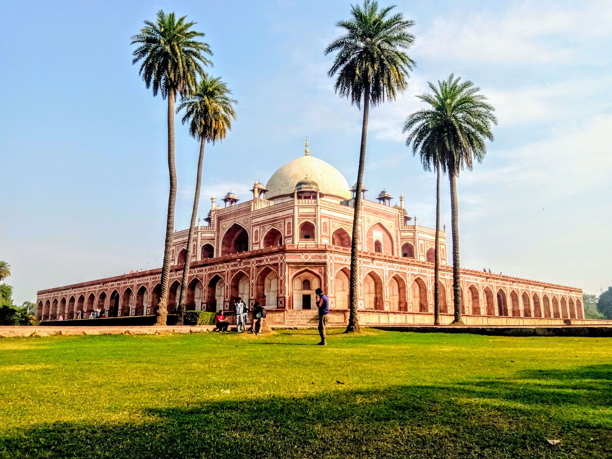

| Name |
Image |
About the City |
| Bangalore |
|
Bangalore is a bustling city located in the southern part of India and is the capital of the Karnataka state. Popularly known as the Silicon Valley of India, it is the hub of tech companies and start-ups. It is known for its pleasant weather all-year round and South Indian food especially filter coffee. |
| Mumbai |
|
Also known as the financial capital of India, Mumbai is the city of dreams for many of us. The hot and humid climate does not stop its inhabitants from living a bustling life. Mumbai is home to one of the busiest airports in Asia as well as one of the busiest railway terminals in the world. |
| Delhi |
 |
The capital of the country, New Delhi is a historic city full of architectural monuments. I used to love visitng places like Humayun's tomb and Purana Qila. Delhi is also known for its vibrant food culture. You can find a variety of different cuisines and can dine well for as little as $5 to the most expensive Michelin star restaurant. |
| Goa |
 |
Goa is known for its quiet beaches and beautiful landscapes. The small state was previously a Portuguese colony and is complete with old-style colonial houses that are still preserved for their heritage value. It is also known for its seafood, music and water-side restaurants that let you enjoy a mesmerizing sunset as you eat dinner. |